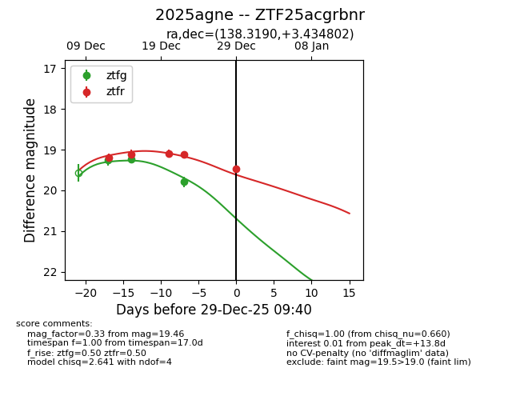
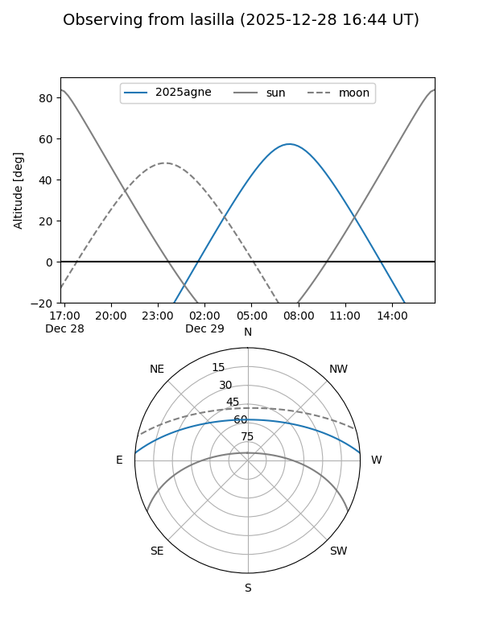
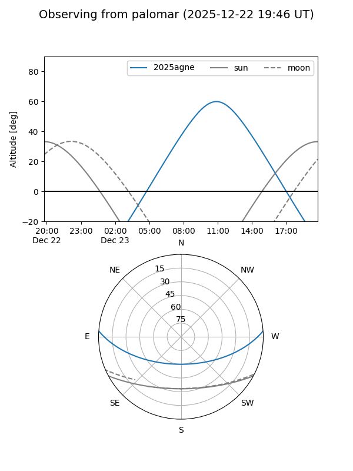
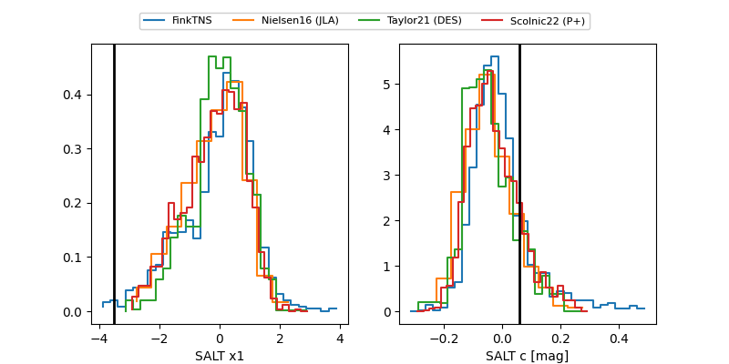

2025agne
Target 2025agne at 2025-12-22 20:23
Aliases and brokers:
FINK: fink-portal.org/ZTF25acgrbnr
Lasair: lasair-ztf.lsst.ac.uk/objects/ZTF25acgrbnr
ALeRCE: alerce.online/object/ZTF25acgrbnr
TNS: wis-tns.org/object/2025agne
YSE: ziggy.ucolick.org/yse/transient_detail/2025agne
alt names
ZTF25acgrbnr (ztf,fink_ztf)
2025agne (tns,yse)
Coordinates:
equatorial (ra, dec) = 138.3190,+3.43480
equatorial (HMS+DMS) = 09:13:16.55,+03:26:05.29
galactic (l, b) = (227.4623,+32.86749)
Flags:
Photometry:
last ztfg=19.79, ztfr=19.11
3 ztfg, 4 ztfr detections
Lightcurve

Visibility


Additional plots
